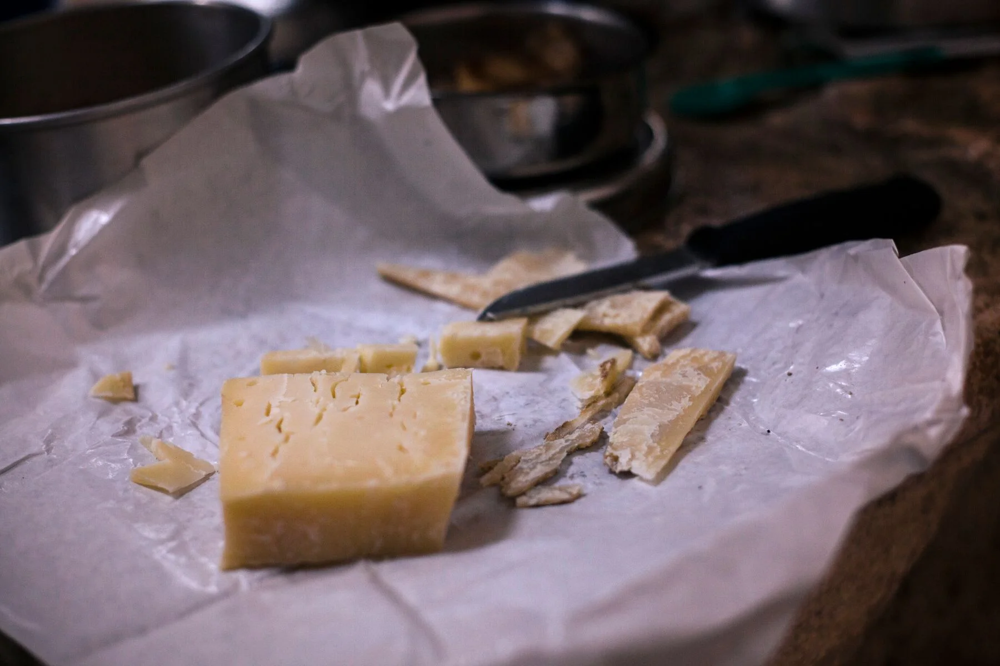
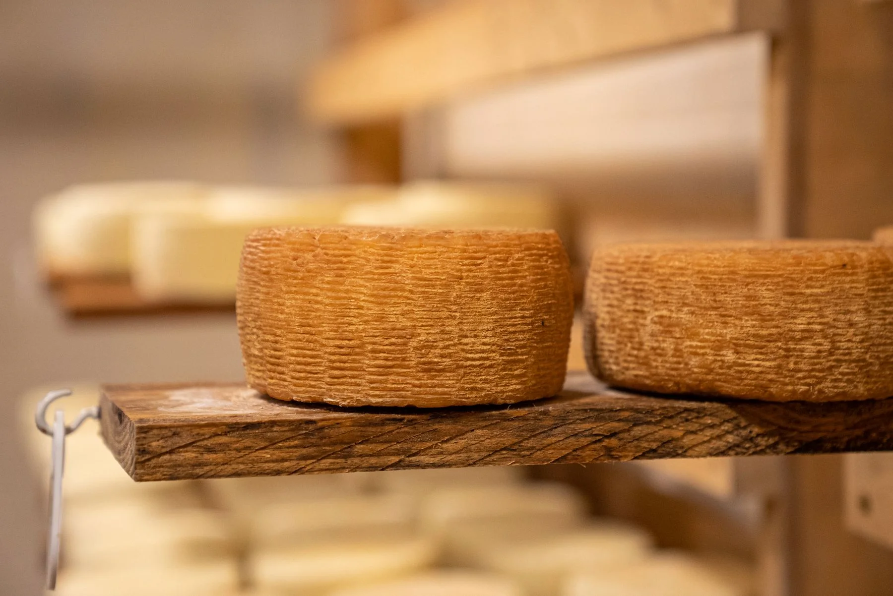
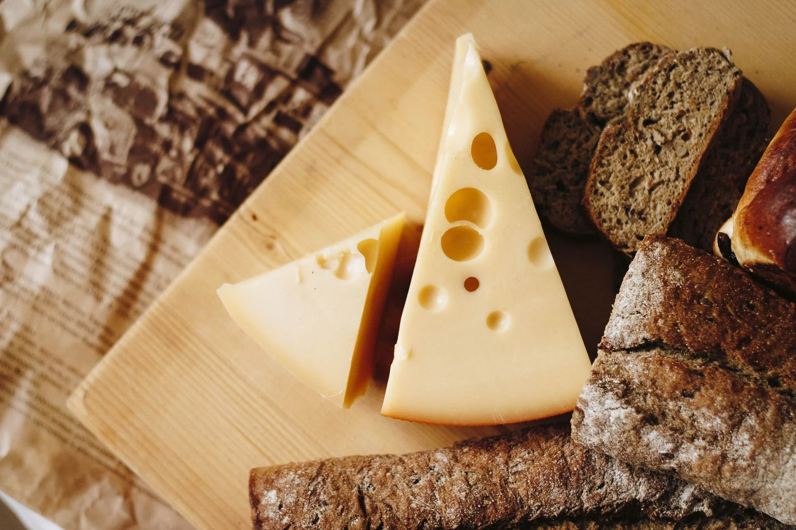
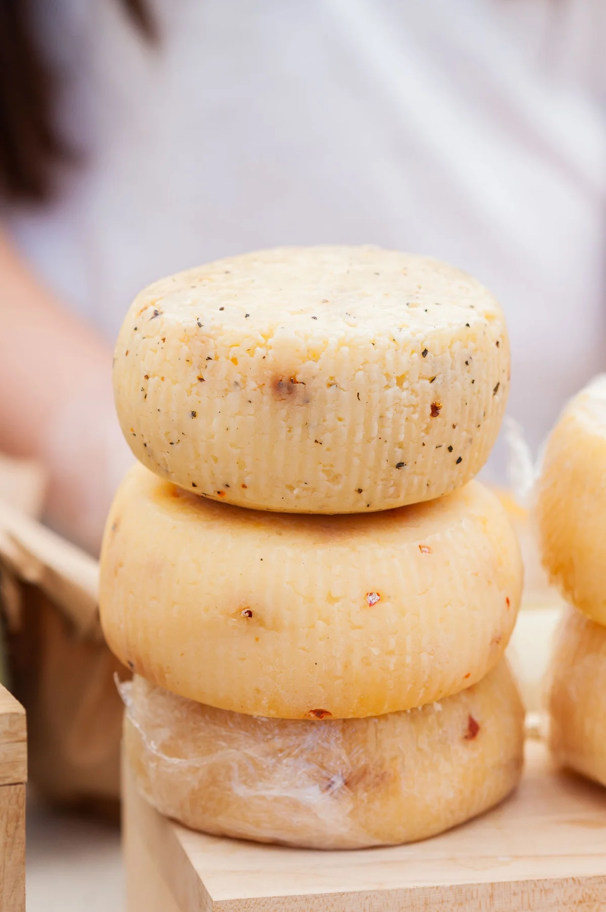
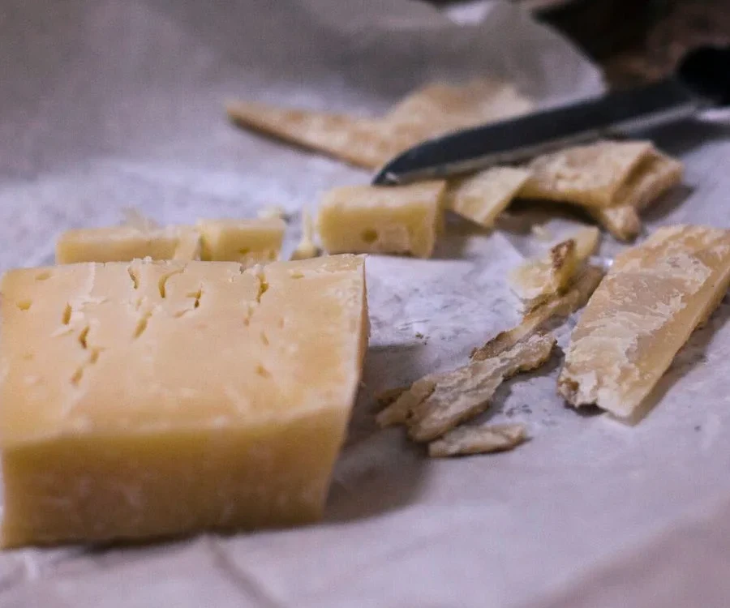
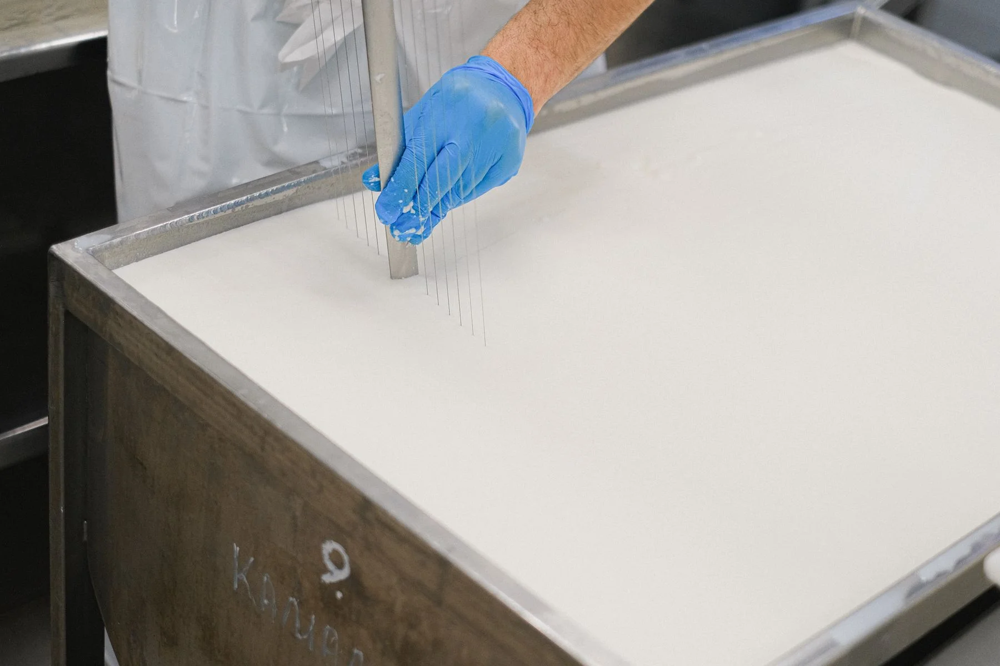
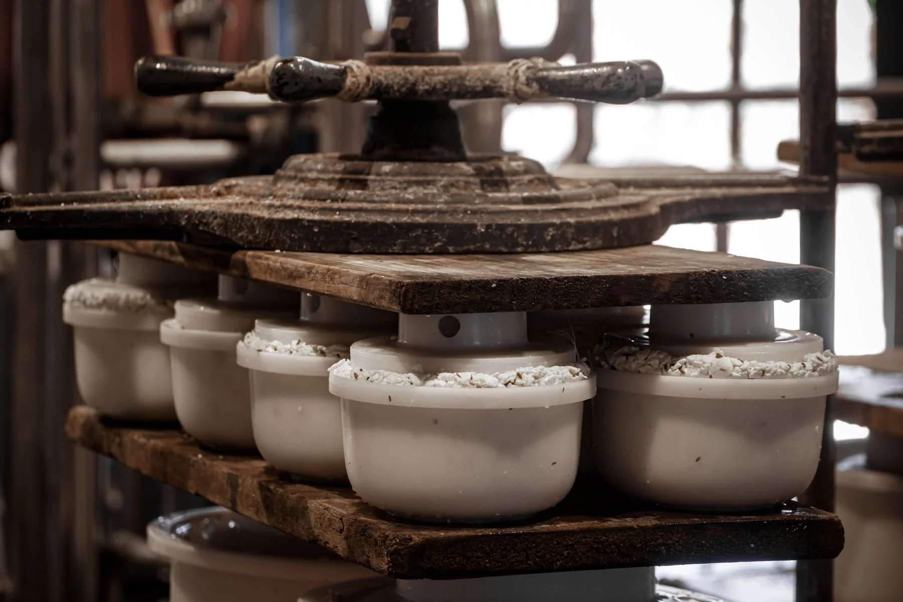
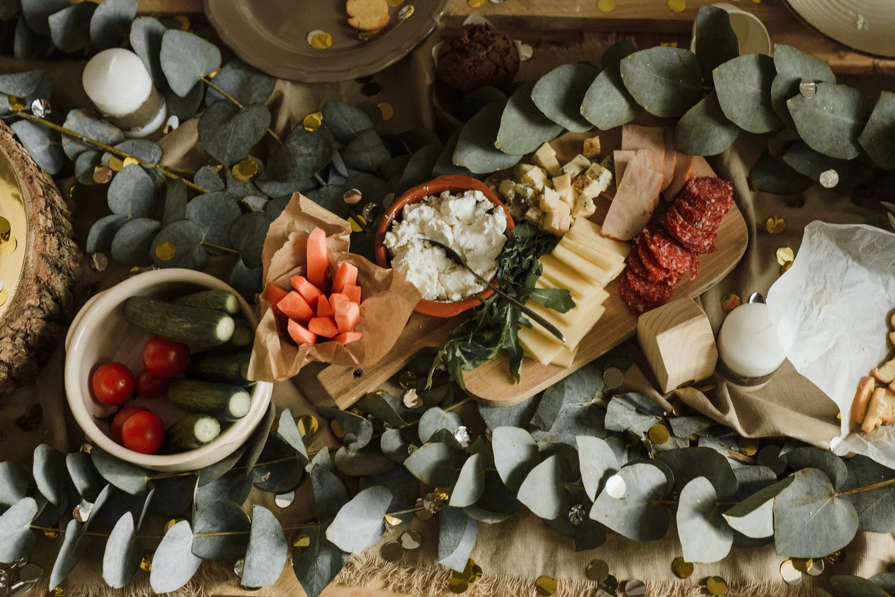

Elaborar y distribuir quesos menonitas de calidad superior, con procesos artesanales y rigor en cada etapa, para llevar un sabor auténtico a las mesas de México y Norteamérica.
EL ORIGEN DE UN BUEN SABOR
Tradición que
se transforma
en carácter.
Sabor menonita, alcance global.
De la tradición quesera de Chihuahua a nuevas mesas. Quesos que reúnen el cuidado del oficio y el valor del tiempo.
Raíces en Chihuahua.
Vocación por el buen queso.
Vocación por el buen queso.

Herencia quesera✦Maduración con cuidado✦Origen que se comparte

1987El inicio de nuestra historia
01 — NUESTRA HISTORIA
De nuestra tierra,
a tu mesa.
Hay sabores que cuentan de dónde venimos.
Cumbre Menonita es una empresa quesera originaria de Cuauhtémoc, Chihuahua. Su identidad nace de la tradición regional de elaboración de quesos menonitas y del respeto por este oficio.
En nuestro caso empresarial, la historia comienza en 1987 con una iniciativa familiar. Con el tiempo, evoluciona hacia un modelo de distribución especializada que une tradición, maduración y atención comercial.
Lo que nos mueveHitos del escenario empresarial ficticio
- 1987Una iniciativa familiar en Cuauhtémoc.
- 1996Ampliación de elaboración y distribución.
- 2005Expansión regional hacia el noroeste.
- 2012Presencia comercial en El Paso.
- 2019Almacenamiento en Otay Mesa.
02 — NUESTRA ESENCIA
El oficio nos une.
Los valores nos guían.
Declaraciones institucionales de la identidad ficticia del caso.
Somos una de las empresas líderes en la venta de quesos de Norteamérica, reconocida por su calidad, su variedad y la confianza de sus clientes.
Pasión
Amamos el oficio quesero y se nota en cada pieza.
Excelencia
Nada sale de planta si no cumple nuestro estándar.
Integridad
Decimos lo que hacemos y hacemos lo que decimos.
Compromiso
Con nuestros clientes y con los productores de leche de la región.
Respeto
Por la leche, la tierra y las personas.
03 — NUESTROS QUESOS
Tres expresiones.
Una misma raíz.
Del sabor suave de cada día a un carácter más intenso. Una variedad para cada forma de disfrutar.

01 / SUAVE Y VERSÁTILMenonita de Crianza
10 kgQueso de carácter suave, versátil y de uso diario, adecuado para diferentes preparaciones.
En la cocina Antojitos, gratinados y preparaciones de todos los días.
Maduración de referencia 14 a 30 días.
Presentación de referencia: bloque de 10 kg.

02 / SABOR DIFERENCIADOMenonita Reserva
5 kgUna maduración más desarrollada para quienes buscan un sabor diferenciado.
En la cocina Tablas de queso, bocadillos y recetas con protagonismo.
Maduración de referencia 1 a 3 meses.
Presentación de referencia: rueda de 5 kg.

03 / CARÁCTER INTENSOMenonita Añejo
1 kgUn perfil más intenso para experiencias gourmet, degustaciones y maridajes.
En la cocina Degustaciones, pastas y acompañamientos con frutos secos.
Maduración de referencia 3 a 6 meses.
Presentación de referencia: cuña de 1 kg.
Catálogo conceptual del proyecto. Presentaciones, características y tiempos de maduración de referencia; pueden variar entre lotes y no implican disponibilidad comercial comprobada. La liberación del producto depende de sus características y controles de calidad, no solo del tiempo transcurrido. Fotografías ilustrativas de quesos, no de productos propios.
04 — EL ARTE DE ELABORAR
Leche, oficio
y el tiempo justo.
Cada etapa prepara la siguiente. Así se transforma la leche en un queso que desarrolla su propio carácter.
Imágenes ilustrativas del proceso quesero. Las fotografías no corresponden a instalaciones de Cumbre Menonita.

01
Recepción y revisión de la leche
La leche se recibe y revisa antes de iniciar su procesamiento.
02
Pasteurización
La leche recibe el tratamiento correspondiente como parte del proceso de elaboración descrito en el caso.
03
Fermentación y coagulación
Se incorporan fermentos y cuajo para formar la cuajada.
04
Corte y tratamiento de la cuajada
La cuajada se corta y se trabaja para facilitar la separación del suero.

05
Prensado y moldeado
El queso adquiere forma mediante moldes y presión controlada.
06
Salmuera y oreado
La pieza pasa por las etapas de salado y preparación de su superficie.
07
Maduración
El queso permanece bajo condiciones controladas para desarrollar sus características. Cada variedad encuentra su expresión con el tiempo y el cuidado apropiados.
08
Empaque y conservación
Empaque individual al vacío apto para contacto con alimentos, identificación de lote y conservación apropiada antes de su distribución.
05 — CUIDADO EN CADA ETAPA
El buen queso también
se cuida en el camino.
Nuestro modelo de calidad conecta elaboración, trazabilidad y conservación hasta la recepción del producto.
- Elaboración
- Maduración
- Empaque
- Conservación
- Distribución
- Cliente
Conocer cada pieza
Control desde la elaboración, maduración según la variedad e identificación de lotes para acompañar el recorrido del producto.
Proteger sus cualidades
Inspección de empaques, rotación adecuada del inventario y conservación refrigerada a temperatura controlada conforme a especificaciones del producto.
Cuidar hasta la recepción
Transporte con protección de la cadena de frío y revisión del producto durante la recepción, conforme a su ficha técnica.
PROTECCIÓN DURANTE EL ALMACENAMIENTO Y TRANSPORTE
Tres niveles de cuidado.
- Empaque individual
- Material apto para contacto con alimentos que protege cada pieza y conserva sus características.
- Cajas de protección
- Cartón corrugado resistente a la humedad y refrigeración, con identificación de variedad, lote, fechas y condiciones de conservación.
- Protección de la carga
- Tarimas sanitarias y elementos de sujeción para mantener la carga estable, proteger las cajas y permitir la circulación del aire frío.
06 — ORIGEN LOCAL, VISIÓN AMPLIA
Raíces en Chihuahua.
Mirada al norte.
Un modelo que conecta el origen quesero con negocios del norte de México y Estados Unidos.
Para el abastecimiento transfronterizo, el modelo contempla la preparación documental y la revisión de los requisitos del mercado de destino.
Red contemplada en el modelo empresarial académico. No representa instalaciones ni rutas verificadas.
ESTADOS UNIDOS
01
Otay Mesa
San Diego, California
Almacenamiento contemplado
02
El Paso
Texas
Presencia comercial del escenario
FRONTERA MÉXICO — ESTADOS UNIDOS
03
Otay, Tijuana
Baja California
Distribución contemplada
04
Sásabe
Sonora
Punto regional contemplado
Cuauhtémoc, Chihuahua
Origen y sede principal del caso
Diagrama conceptual · sin escala geográfica

07 — DE NUESTRO OFICIO A TU NEGOCIO
Tradición quesera
que llega a tu negocio.
Buscamos construir relaciones de suministro basadas en la calidad del producto, la identificación de su origen, las condiciones de conservación y la atención a las necesidades de cada cliente.
- Producto de origen definido.
- Variedades de queso para diferentes necesidades.
- Abastecimiento planificado.
- Trazabilidad y conservación.
- Atención comercial especializada.
Restaurantes · Tiendas gourmet · Hoteles · Negocios de alimentos · Distribuidores especializados
Explora el portafolioPara conocer la propuesta, solicita información directamente al representante durante la presentación comercial.